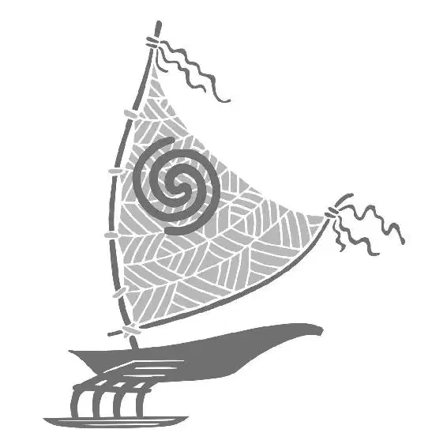

“Hello,” said a sinister voice.
The ground beneath Moana’s feet shook, and she turned to see a fifty-foot crab monster staring at her! The sparkling gold and jewels were all piled up and calcified, hardened onto the back of his enormous shell. He snatched Moana in one of his pincers and held her up to his creepy face. She screamed in terror, but Tamatoa covered her mouth and rudely said, “Mute that!” He looked her up and down and said, “Little human, whoa-ho-ho ... in the realm of monsters.” His protruding eyes circled her, checking her out from every angle as Moana followed them fearfully. “Well— pick an eye, babe. I can’t concentrate on what I’m saying when you’re going back and forth like— Just pick one,” he said as she looked at one of his eyestalks and then at the other one. “Pick one,” he demanded. As Moana tried to focus on only one of his eyes, he asked, “What are you doing down here, human?”
He flipped her in the air to get a better hold on her, and Moana could see Maui attempting to sneak around behind Tamatoa. Maui silently motioned to Moana, wanting to remind her of the plan to get Tamatoa to talk about himself, but it was clear that Moana did not want to go that route. When Tamatoa turned one eyeball to see what Moana was looking at, Maui was gone.
“I, uh ... I love your shell,” said Moana awkwardly, trying to follow Maui’s idea.
“Everyone loves my shell, mon poisson. It’s spectacular,” Tamatoa said nonchalantly. “But you didn’t answer my query.” He used a jagged claw to poke threateningly at Moana. Behind him, Moana could see Maui sneaking forward, closer to them.
“Why are you here?” Tamatoa asked sharply as he fiddled with Moana’s necklace.
“Don’t! That’s my gramma’s,” Moana said, swatting at him with her hands.
“‘That’s my gramma’s,’” Tamatoa said, rudely mimicking her. “I ate my grandparents. Why are you here?” he asked, louder. He pulled her in even closer, and she shrank back in fear.
She peered behind Tamatoa and could see Maui moving toward them.
Tamatoa raised his voice, demanding an answer from her as he leaned in. “Why are you—”
“To rob you!” Moana blurted. “I came to—to steal one of your treasures. But now, in the presence ... of your ... splendor ... ,” Moana said hesitantly, searching for the right words. “I just—I honestly just want to know how you became so beautiful.”
Tamatoa stared at Moana for a beat, looking at her skeptically. “Are you trying to get me to talk about myself?” he asked. Moana looked at him, unsure of how to react. But to her surprise, he flashed a big eerie smile and said, “Why didn’t you say so?”
The monstrous crab struck a pose and bragged about all the shiny stuff on his back. Maui was right; Tamatoa was more than happy to chat about himself and told her he liked feeling beautiful. He explained that his obsession with decorating his shell with treasures was practical, too: he never had to look for fish to eat because they were lured in by all his glittering gold. He demonstrated by eating a whole bunch of fish. They had been hypnotized by his shell and had swum down to the bottom of the ocean. Then they had fallen into the realm of monsters, and Tamatoa’s mouth.
Tamatoa flipped Moana up into the air. From there, she could see Maui struggling to climb toward his fishhook.
Tamatoa caught her in mid-air and then dangled her over his mouth as he eyed her hungrily. He was already prepared for his next meal. Moana panicked as she searched for Maui ... but he had disappeared! Tamatoa brought her closer to his teeth, and just as the giant crab monster was about to chomp down on her, Maui leapt in and grabbed his hook, yanking it from the shell.
He hurried to Moana and scooped her up, then posed like a superhero, feeling like he was on top of the world. “It’s okay, you’re safe now,” Maui said.
Moana smiled gratefully ... until she realized Maui was talking to his hook.
“Whaddaya say, little buddy?” Maui asked, looking to Mini Maui for a suggestion. Mini Maui transformed into a hawk. “Giant hawk? Comin’ up! Chee-hoo!” shouted Maui as he triumphantly held the hook above his head. It glowed and flashed brightly, and he transformed into a ... fish. Maui tried again, but he transformed into a bug, then a pig ... then he was back to being a demigod.
Tamatoa stared at Maui, wondering what was wrong. Maui shook his hook a little, attempting to fix it. He tried a third time, but his shape-shifting powers were just not working. The demigod was getting more and more frustrated.
Tamatoa sneered, thoroughly enjoying Maui’s predicament. He moved toward Maui and knocked him across the cave with one of his giant legs. When Maui pulled himself up, Tamatoa hit him again.
“Stop it!” yelled Moana, shocked by his violent force.
His attention returned to Moana, and Tamatoa tossed her into a makeshift cage made out of whale and fish bones. Then he continued to torture and mock Maui, not noticing when Moana managed to slip through the slats of the bone cage. She looked around for a way out and spotted a crack in the cave’s wall leading outside. Moana glanced back to see Maui getting beaten up and knew she couldn’t leave him.
As he poked and prodded Maui, Tamatoa talked more about himself and his love of collecting shiny things. He grabbed Maui’s hook and jammed it back into his shell. Then he pushed Maui to the ground. Using the sharp, jagged edge of his torn claw, he cut into a tattoo of a woman and baby on Maui’s back. Maui tried with all his might to push Tamatoa off, but he seemed paralyzed by the crab monster’s force.
Tamatoa laughed wickedly and tossed Maui against the wall of the cave, pinning him there with one of his pincers. As he prepared to end Maui’s life with a final blow, Moana called to him. “I’ve got something shiny for ya!” She held up the glowing heart to get Tamatoa’s attention.
“The heart of Te Fiti,” Tamatoa said eagerly.
Holding the heart, Moana ran off. Desperate for the elusive treasure, Tamatoa instantly dropped Maui to chase her. Maui watched, stunned, as Tamatoa gained on her. Moana lost her footing, tripped, and dropped the heart. It rolled and fell down into a crevice!
As Tamatoa rushed toward the crevice, Moana ran up his shell and grabbed Maui’s hook! She jumped down and dragged the heavy fishhook to Maui as Tamatoa tried to get to the heart.
Moana noticed the cut in the tattoo on Maui’s back and wondered if he was okay, but she knew there was no time to ask. “We gotta go,” she said, eyeing Tamatoa as he continued to dig into the crevice.
“But the heart ... ,” said Maui.
“He can have it,” whispered Moana. She revealed the heart inside her shell necklace and smiled. “I’ve got a better one.”
It was then that Tamatoa finally pulled out what he thought was the heart ... but it was only a nasty old barnacle covered with glowing green seaweed. He instantly knew he had been tricked, and he was furious.
“Come on! Run!” shouted Moana, taking off.
Full of rage, Tamatoa charged at them, his claws rapidly tapping against the ground as he ran faster and faster. Moana quickly ducked, and Tamatoa smashed into the wall, knocking a hole into it. As Moana pulled Maui through and out of the cave, he transformed into a fish. Moana picked him up and carried him as she continued to run from Tamatoa. But without warning, Maui transformed back to his normal form, and she dropped him! Right behind them, Tamatoa reared up, ready to attack. Moana yanked Maui onto a geyser hole—and it hissed and erupted just in the nick of time, lifting them out of Tamatoa’s reach!
The force knocked Tamatoa back on his shell, and he was stuck, like a turtle. His glittering treasures cracked off and spilled all around as he flailed helplessly.
“Chee-hoo!” shouted Moana. The mighty geyser blew them straight up through the ceiling of the underworld and back into the arms of the ocean!
